Editors are used to specify and modify parameters of objects, datatypes, ...
An object's editor is usually called by doubleclicking on the object.
Call the Table Editor by doubleclicking on a table or selecting [Edit Object] from the table's popup menu. You can also doubleclick the tables name in the DB-Model Palette or use the right mousebutton to call the popup menu there.
To use the Table Editor the most efficient way use the following procedure.
I.) Create a new table in the model. Doubleclick on the table to call the Table Editor. The Table Name is focused so enter the table name. Press [Return].
II.) The focus will be set to the first line of the Table Columns. The
first column will be named id+tablename automatically. If the first column has to have
a different name enter the column's name. Then press [Return].
III.) Enter the next column name and press [Return]. Repeat this for all columns. Ignore the datatypes of the columns at this time, all columns' datatypes are set to the default datatype initially.
IV.) After the last column has been entered, press [Esc] to abort the column edit mode.
V.) To assign the datatypes to the columns start by dragging the first column's datatype from the
Datatype palette onto the first column. Enter the datatype's parameters if the Parameter Editor pops up,
e.g. VARCHAR(___)
Repeat this for all column types.
VI.) To define the primary key click on the columns' icon (left to the column name) to add or remove the column from the primary key.
VII.) Optionally define additional indices, the table options, the standard inserts and the table comments.
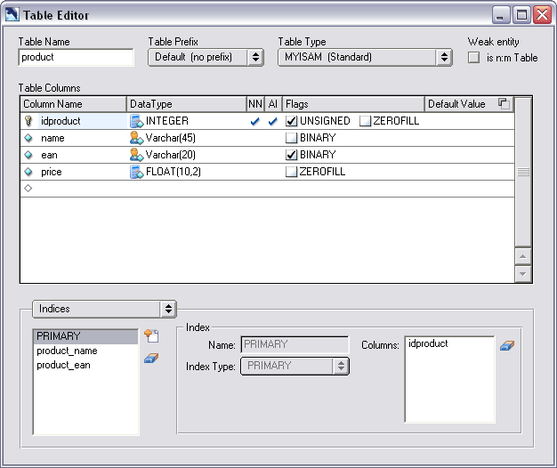
The Table Editor
Table Name displays the current name of the table. By pressing Return or leafing the edit field the Table Name is checked against the reserved word list. If the Table Name equals a reserved word it is changed automatically.
In MySQL the Table Prefix can specify the database (db_name.tbl_name). Use this
function if you want to administrate several databases in only one model. The Table Prefixes
are defined in the Model Options.
MySQL supports several different Table Types. The most common types are MyISAM which is the default type and InnoDB which supports transaction-safe tables with row locking.
Check the [is n:m Table] checkbox if this table is a n:m Table.
The cursor keys can be used to move the Cursor between the Column Name, Datatype and the Default value and the table columns. Press enter to change the focused value.
Use the mouse to dray an new datatype from the Datatype Palette onto the column. Doubleclick the datatype to change the datatype's parameters.
Click on the Table Column's row to change the NOT NULL Flag, the Column Options and the Autoincrement Flag.
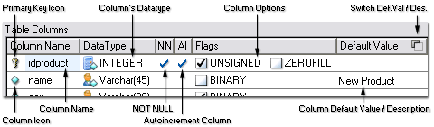
The Table Columns
To enter a new column click on any column name an press the Page Down Key. The Cursor is placed below the last column. Add the new column by entering the column name.
If you want to enter several new columns press return. The Curor is moved to the next row and the next column name can be entered.
Drag the appropriate datatype from the Datatype Palette onto the new column. Enter the datatype's parameters if needed.
Set the Column's NOT NULL Flag, the Column Options and the Autoincrement Flag if nessesary.
An unlimited number of indices can be defined for each table. The PRIMARY index is defined automatically and cannot be deleted.
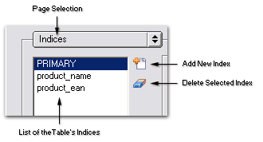
The Indices List
To add a new index click the plus button and enter the index name. Select the Index Type. You cannot select the primary type manually because there can only be one primary index.
To delete an index select it in the index list and click the rubber button.
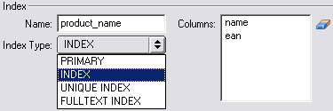
An Index
To add columns to the index drag the appropriate Table Columns down to the Index Columns listbox. You can reorder the index's columns by drag'n'drop in the Index Columns listbox.
To delete a column from the index select the column in the Index Columns listbox and click the rubber button to the right.
Every table can have it's Standard Inserts. They provide initial data for the tables.
When the SQL Creates are exported or the database is created by the syncronise function the Standard Inserts can be exported or executed as well.
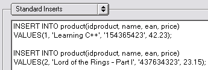
The Standard Inserts
To add a SQL INSERT command click the right mouse button and select Paste SQL Insert from the Standard Inserts memo's popup menu.
To clear the Standard Inserts click on the rubber button right to the Standard Inserts memo.
The Table Options provide access to the MySQL specific table options. Please refere to the MySQL documentation to understand the functionality of the several Table Options.
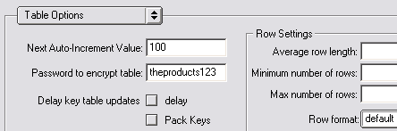
The Table Options
Like the Table Options the Advanced Table Options provide access to the MySQL specific table options. Please refere to the MySQL documentation to understand the functionality of the several Table Options.
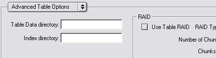
The Advanced Table Options
To store additional information about the table select the Comments and enter the information.
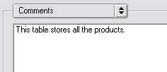
Table Comments
The Relation Editor allows you to change the Kind of the relation, the Foreign Keys fields mapping and the Relation Reference Definition.
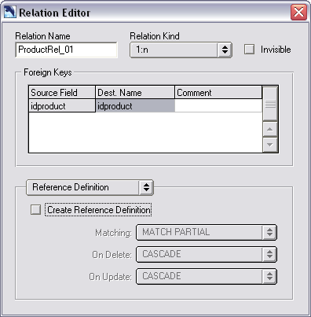
The Relation Editor
Change this value to rename the relation.
A relation can be one of the following kinds.
| Kind | Caption | Explanation | Example | |
| 1:1 | one - to - one relation | One row in the source table matches one row in the destination table. | A relation between a [customer] table and an [address] table. One customer has one address. | |
| 1:n | one - to - many relation | One row in the source table matches many rows in the destination table. | A relation between an [order] table and a [orderproduct] table. One order can have many products and a product in the [orderproduct] table is only part of one order. | |
| 1:n (Non Identifying) | one - to - many relation, FK not in PK | One row in the source table matches many rows in the destination table but the Foreign Key in the destination table is not in the Primary Key Index. | A relation between a [payment] table and an [order] table. Each row in the [order] table as a [payment] assigned to. Only [idorder] is the Primary Key field in the [order] table. | |
| n:m | many - to - many relation | A n:m relation is always broken down into two 1:n relations. | ||
| 1:1 (Generalisation) | one - to - one relation | This relation is treated like a normal 1:1 relation within DBDesigner 4. Some plugins make use of this type of relation. |
Use this option to hide the relation. To make the relation visible again select the source table or the destination table in the Model Palette, expand the relations and doubleclick the invisible relation. In the Relation Editor disable this option.
Use the Foreign Key table to change the fieldnames of Foreign Keys in the destination table and to
add additional comments to the fields.
Doubleclick a value to change it.
Select the Create Reference Definition checkbox to activate the Reference Definitions. Use the
comboboxes to select the appropriate actions for delete and update events.
Please note that native MySQL tables do not support Foreign Key Reference Definitions. Use InnoDB if
Foreign Key Reference Definitions are needed.
To make the relation optional on one side check the appropriate option.
Use the Comments Memo to enter additional information about the relation.
Call the Region Editor from the region's popup menu. The Region Editor allows you to define
default table settings for all tables positioned on the region.
To activate set default settings selected the wanted options and enable the checkbox next to that option.
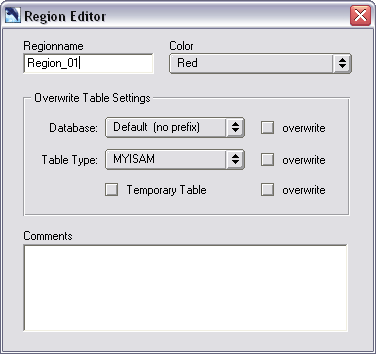
The Region Editor
Change this value to rename the region.
Each region is painted in an individual color. Choose from the list to specify the region's color.
Select the appropriate settings and check the overwrite checkbox to activate them.
The comments memo can be used to store informations about the region.
Doubleclick on a new created note to enter call the Note Editor and enter the note's text.
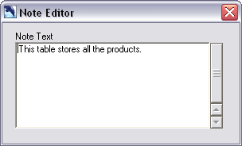
The Note Editor
Doubleclick on a image to call the Image Editor.
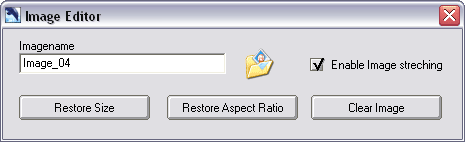
The Image Editor
To replace this image with an updated version of the image or a different image click the Image Folder button. A file browser is shown and you can select the image.
Currently only the PNG and BMP image formats are supported.
When the Strech Image option is selected you are able to resize the image.
To restore the original size of the image after it has be rescaled press the Restore Size button.
When the image has been resized and the aspect ratio was changed press the Restore Aspect Ration button to change the height of the image according to the aspect ration.
Press the Clear Image button to remove the bitmap.
Doubleclick on a datatype in the Datatype Palette to call the Datatype Editor.
To call the Query Editor from Design Mode right-click on the table and select Edit Table Data from the popup menu.
When DBDesigner 4 is Query Mode a docked Query Editor is shown at the bottom of the main window. To open another editor double-click on the appropriate table.
If there is no active database connection the Database Connection Dialog will be shown. Create a new or select an existing database connection and click connect.
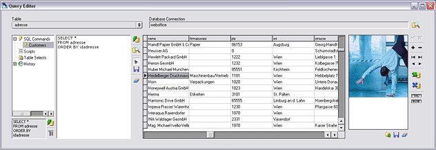
The Query Editor
The Query Editor can be divided into two main areas, the SQL Command Editor and the Data Grid.
The SQL Command Editor is used to specify a SQL Command. The Data Grid will display the result returned from the Database.
The SQL Command Editor is extended by the SQL Command Storage Tree. The SQL Command Storage Tree is used to store SQL commands permanently with the model and to keep a command history.
The Data Grid is extended by the BLOB Editor. BLOB Editor is used to modify, load and save data from or to BLOB fields.
When the Query Editor is opened from Design Mode or by double-clicking a table in Query Mode, only the Data Grid is visible. To display the SQL Command Editor click the SQL button at the right.
To display the SQL Command Storage Tree click on the tree icon right to the SQL Command Editor.
To edit the content of a BLOB Field click on the BLOB button at the right.
Copyright 2003 fabFORCE.net. All rights reserved. |
|